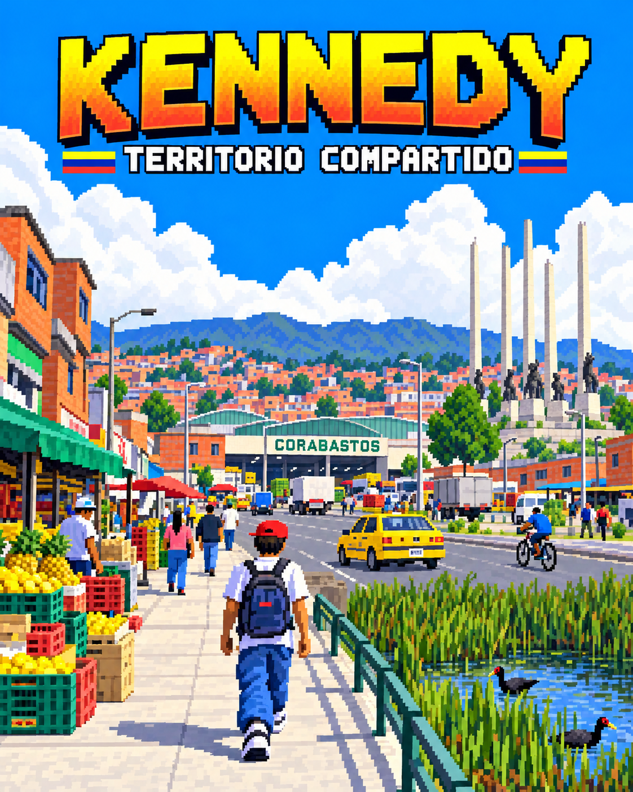

KENNEDY · TERRITORIO COMPARTIDO / CAPÍTULO 02
Tres escenarios.
Un territorio vivo.
A pie de calle, cada acción puede continuar en otro lugar.

Volver al videojuego ↗PROTOTIPO JUGABLE · Vista peatonal en tercera persona · Lugares estilizados, no reconstrucciones geográficas. Los tiempos son del juego, no tiempos de viaje reales. Cada ventana sigue a un personaje local distinto. Las líneas terminan en la cabecera cuando el objeto del evento ya quedó fuera de cámara.
WASD o flechas: caminar · E: interactuar · controles táctiles disponibles. Si la misión terminó, entrar inicia un nuevo ciclo de las tres escenas.
LECTURA ENTRE LUGARES
Las relaciones se activan con eventos de la simulación. Sigue el lote AL-01 desde Corabastos hasta la venta en Patio Bonito.
LO QUE ESTÁ SUCEDIENDO
Acciones que dejan huella.
EL MODELO DETRÁS DEL JUEGO
Identidades, eventos y tiempos.
Los recuadros siguen personajes, fauna y recursos. Las líneas entre ventanas enlazan eventos identificados: un mismo lote, una consecuencia programada o dos acciones que coinciden en el tiempo.
Exporta los eventos actuales para analizar continuidad de mercancías, pausas de circulación e interacciones locales. Las conexiones entre escenarios distinguen continuidad real dentro del juego y comparaciones sin causalidad.
Especies, reglas y límites
Copetón, torcaza, caracol de tierra y colibrí chillón son candidatos de la red del proyecto; falta validar su presencia en cada emplazamiento. La relación colibrí–cayeno representa alimentación, no polinización demostrada. El caracol es introducido: se representa como observación de suelo; no se premia su expansión. Los refugios permanecen separados del paso peatonal.
Las acciones cambian rutas o recursos mediante reglas explícitas. No son predicciones ecológicas calibradas. La recogida en Patio Bonito y el cuidado del borde de El Burro son prácticas comparables; no implican que sus residuos viajen entre ambos lugares. Los materiales y actores visibles son ilustrativos.